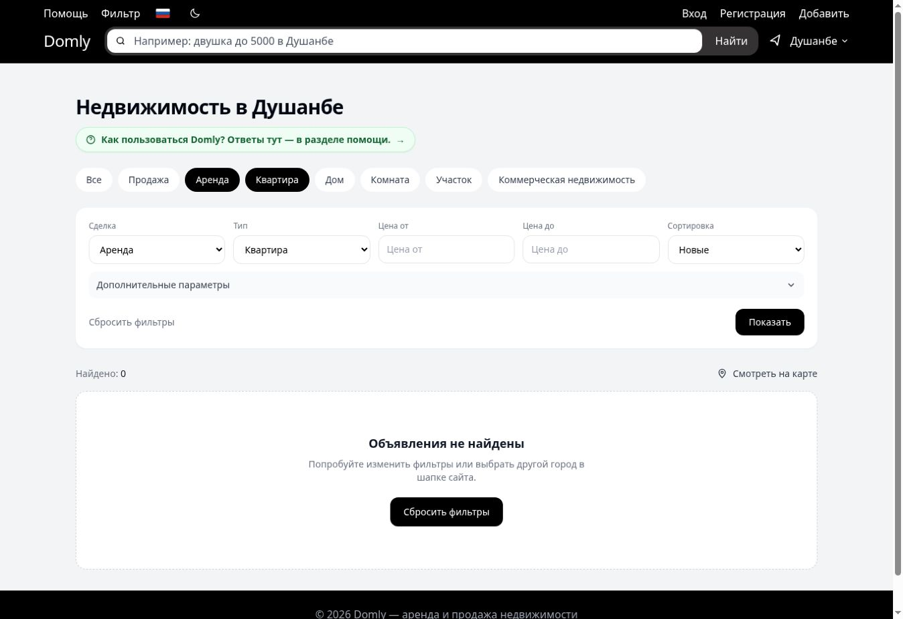

01
Основной проект · Django backend
Domly
Веб-сервис аренды и продажи недвижимости для Душанбе. Реализовал регистрацию и профили, объявления с фотографиями, поиск, фильтры, избранное, сообщения, уведомления и модерацию.
- Доступ к данным. Проверка участников диалога перед чтением и отправкой сообщений.
- Надёжность чата. Обработка повторной отправки по client_id без дубликатов; транзакции для связанных операций.
- Проверка и запуск. Тесты сценариев чата и прав доступа; production-конфигурация PostgreSQL, nginx и systemd.
